An outside walk-through of the Mandos app. What's working, what isn't, and the strategic direction I want to bring into the designer call.
This document is the structured outside read I want to bring into our designer conversation. The intent is to make the gaps in the current app legible, then commit to a strategic direction that's actually defensible.
Part II walks the current app screen by screen. Part III is a strategic proposal for where the product could go next. None of the proposed direction sits in the product today. It's the lens I'd like us to evaluate together before the designer call.
I walked the app the way a real user would. Saturday evening. Switched themes twice. Ran the booking flow. Tried to connect Instagram. Opened the partner page. Tested search with a half dozen queries. The patterns below came from that.
Before walking individual surfaces, the brand-level patterns that kept repeating. Each is named with what it is, why it matters to a user, and what the cost is if left in place.
Settings holds a Customize Theme surface that lets users repaint primary, border, surface, and background colours across the whole app. Across the 16 screens reviewed, the accent shifts between orange, pink, and purple. The price label inside the screen looks like a preview of how a paid component might appear. The real issue is the feature existing at all.
Brand identity is the asset that lets a user recognise the product from across a room. If every user runs a different version of the brand, no recognition is possible. The feature also lets users make the app look genuinely bad in their own hands.
Brand equity at exactly the moment we want to invest in it. Recommend: remove the feature entirely. Replace with a system Light/Dark switch tied to iOS preferences.
The Events tab shows one event for the entire month. Search returns sparse results. The Rewards shop is empty. The catalog is thin across every supply-side surface.
Hong Kong runs hundreds of events a week. Time Out HK, Sassy HK, and Magnetic Mag all carry these. The user opens Mandos to find their night and is told there isn't one. The product can't out-design a content problem.
User trust on the first session. Even if the app is beautiful, a thin inventory tells the user the platform isn't where the action is. Worth treating supply as urgently as design.
Four top-level tabs sort by venue type (Discover, Events, Clubs, Bars). The same taxonomy repeats inside the map. Search filters offer "Sort by Name A–Z" and "Sort by Lighting."
A user opening the app on a Saturday isn't thinking "let me find a club." They're thinking "what's happening tonight, who's out, where should I go?" The app forces them to translate intent into taxonomy.
This is the biggest single thing holding the product back. The architecture is right for Yelp, wrong for nightlife. Fixing this opens up most of the proposals in Part III.
"Connect Instagram" opens a sheet asking for a profile URL. "Become a Partner" opens the marketing website as a full webview, header and menu rendered inside the app.
Users notice when integrations are paper-thin. The Instagram URL field signals "we haven't built this yet." The partner webview signals "we couldn't ship this natively." Both screens make the app feel earlier than it is.
Perceived engineering quality. Easier fix: remove these entries until they're real. Half-integrations are worse than no integration in this kind of consumer social product.
Coins exist as a balance on a Rewards page. The shop is empty. The screen is framed as a loyalty program (Shop / My rewards / Bundles / Tickets / Drinks).
The coin is potentially Mandos's most differentiated mechanic, but only if it's a social currency (buy a stranger a drink, tip the DJ, gift a friend), not a discount voucher. The framing today positions Mandos as a loyalty card.
The product's most ownable behaviour. Reframing this is mostly a positioning exercise. The infrastructure already exists. Detailed proposal in Part III.
No iOS Liquid Glass surfaces. No Dynamic Island use. No haptic pairings on key interactions. Modal sheets use Apply/Clear buttons instead of live preview with swipe-to-dismiss. The booking flow reads like a Stripe Checkout in dark mode. The partner page is a webview.
Right now the app feels like Airbnb's booking flow or a banking app, which is the wrong reference for nightlife. Every surface should feel native to iOS: Liquid Glass blur, contextual transitions, haptics, Dynamic Island as a real surface. That's the difference between a utility a user tolerates and an app they actually want to open.
Perceived quality, which is most of the brand at this stage. Native craft is also a moat. No competitor has built a nightlife app around Dynamic Island and Live Activities yet. Closing this gap moves the product up a tier without changing the feature set.
She opens the app. The home screen loads a news article about Anyma in Los Angeles. She taps Events. One event listed for the entire month. She taps the map. Venues with no people on it. She closes Mandos and opens Instagram to text her friends.
The app didn't know she was out, didn't know who her friends were, didn't know what music she likes. It showed her a magazine instead.
She opens the app. A single action sits on Home: I'm out. She taps it. The map fills with her friends' avatars. Two at Boomerang, one walking toward Fay. A small card appears: "DJ Wong Kar at Sing Sing tonight, 4 from your network going."
She didn't have to type a word. The app oriented her to the night and disappeared.
Brief observation against each screen, with the recommended starting position below it. Severity is implied by language. Most of these are tightening passes, not rebuilds.
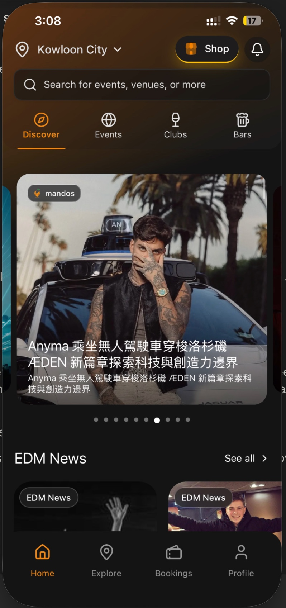
The first surface a new user sees is a news carousel followed by an EDM News row. Three top-bar elements compete for attention (Location, Shop, Notification), four sub-tabs sit underneath, then a news hero. By the time the user can do anything actionable, they've parsed eight UI decisions.
Three-CTA top bar with no hierarchy.
Four sub-tabs sort by venue type. Wrong mental model for the moment a user opens the app.
News is a second hero. Users consume news elsewhere. It shouldn't be Mandos's job.
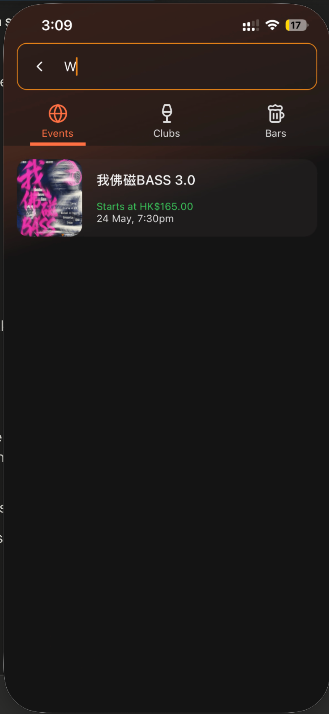
Typing a single letter returns one result on a sea of black. No recent searches, no trending tonight, no nearby venues, no suggested queries. To a new user, the void below the first result reads as "this product is sparse."
Sparse result with nothing else surfaced.
Black void carries unintentional weight.
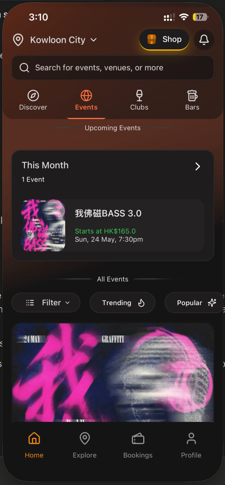
One event for the entire month. Hong Kong runs hundreds of events a week. This is a supply-side problem more than a UI one. The Filter / Trending / Popular row repeats across tabs without functional difference.
Single event signals an empty city.
Filter chips lack semantic differentiation.
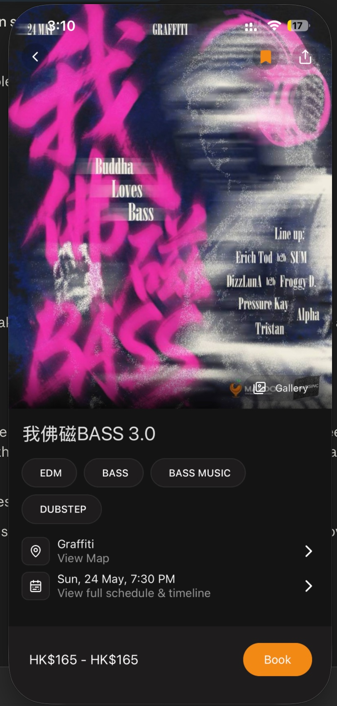
The promoter has supplied a beautiful poster. The app stamps a Mandos logo and a Gallery pill over it. Below the hero, the page becomes a database printout. The question that matters ("is this worth my night?") goes unanswered.
Mandos branding sits on top of user-supplied creative.
No social proof, no music preview, no venue energy.
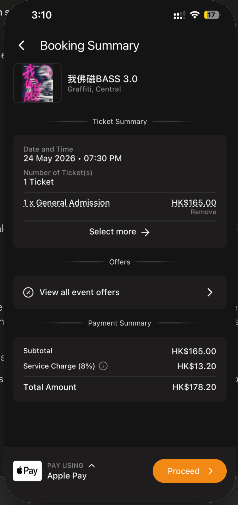
The booking flow works. It just looks like Stripe Checkout in dark mode. There's nothing on this screen that signals Mandos. The coin balance the user has accumulated doesn't show up at the highest-leverage point of sale.
"Booking Summary" is back-office language for an emotionally positive moment.
Coin discount and coin-earn preview are absent.
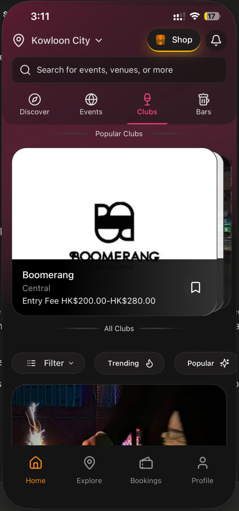
The accent is pink here because the user chose a different theme. The architecture matches the Home tab. Chip rows, hero card, filter pills. The Boomerang logo crashes into a pure-white background block because Mandos doesn't control how venue assets present themselves.
Accent colour is user-defined. Not a brand asset.
Venue logos uncontrolled in their visual treatment.
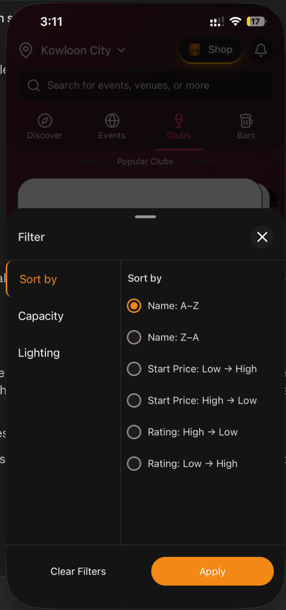
Sort by Name A–Z, Sort by Lighting, six rating sort orders. These are CRM-style filters for a moment that's emotionally decisive. The user opening this sheet is asking "what's alive nearby." The sheet doesn't ask that question back.
"Lighting" as a filter is unusual. Worth challenging which user need it serves.
"Closest" or "most alive right now," the sorts users would actually use, aren't there.
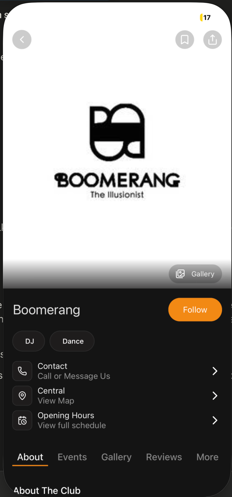
Boomerang's page leads with a black-and-white logo on a pure-white hero. That communicates the brand mark, not the room. Below the hero, five sub-tabs (About, Events, Gallery, Reviews, More) split what should be one connected scroll.
Hero shows the logo, not the venue's feel.
Five sub-tabs fragment a single story.
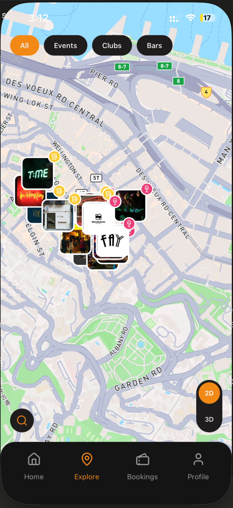
The map is the most interesting screen in the product, and I think the entire app should be built around it. Today it's framed as a sub-tab. Pins stack on top of each other in one cluster, the 2D/3D toggle does little work, and the bottom tab bar pulls the user out of the spatial view.
Pins collide. No hierarchy by activity.
Bottom tabs framing breaks immersion.
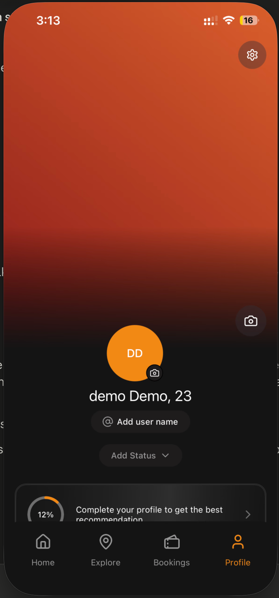
Default state: initials on a gradient and a 12% completion bar. The screen's value is gated behind a form. There's no music, no past nights, no friends visible. Nothing that signals what the profile is for in this app.
Placeholder hero instead of something to be proud of.
Completion meter signals "fill this in or the product won't work."
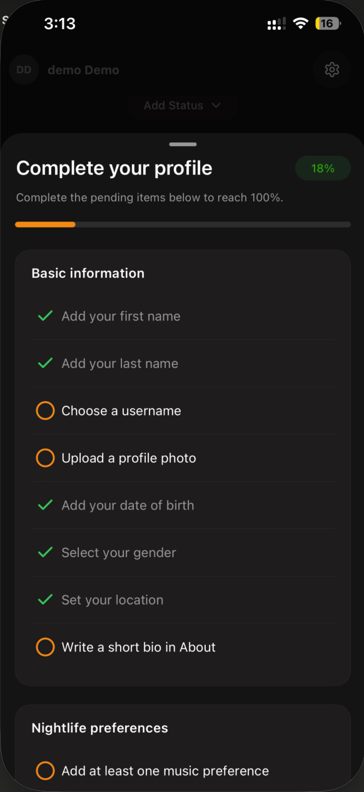
Eight basic-info fields above a Nightlife Preferences section. The order is inverted. The demographic data is the boring half, and the music half is what would actually help personalisation. DOB and gender are requested for a discovery app. Worth challenging both.
Heavy demographic ask up front.
The most useful signal, music, is buried.
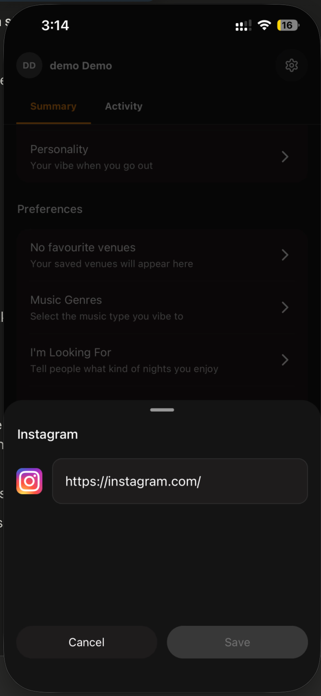
The "Connect Instagram" surface is a bottom sheet asking for a profile URL. It's a placeholder. The product feels more truthful if half-integrations like this are removed until they're real.
The URL field is the whole integration.
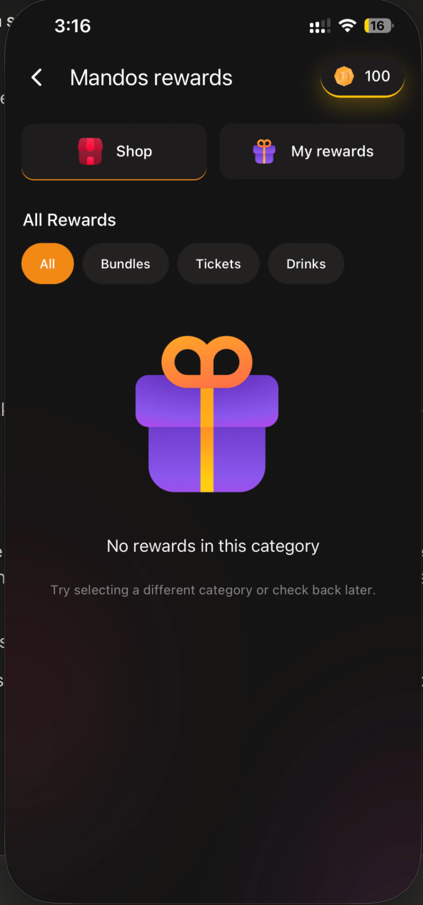
The Rewards page treats coins like Starbucks Stars. Accumulate, redeem at a shop. The shop is empty. This framing is the single biggest framing mistake in the product, and the highest-leverage thing to reposition without rewriting code.
Shop-and-redeem framing positions Mandos as a discount card.
Empty shop next to a 100-coin balance reads as currency-with-no-purpose.
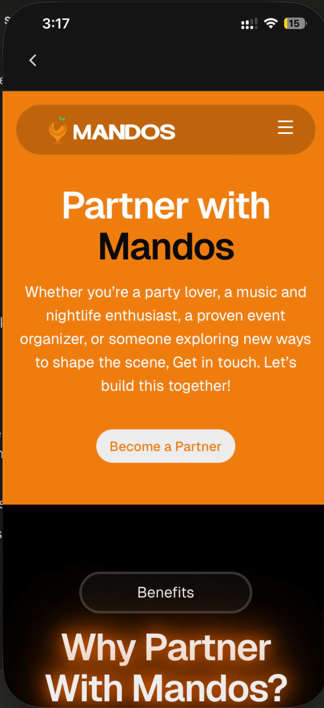
The Become-a-Partner screen loads the marketing website in a full webview. The site's own MANDOS header and hamburger menu render inside the iOS app. The seams show. This is the screen where the app feels least native.
The site's logo and menu are visible inside the app shell.
Partner onboarding is high-value and deserves a native flow.
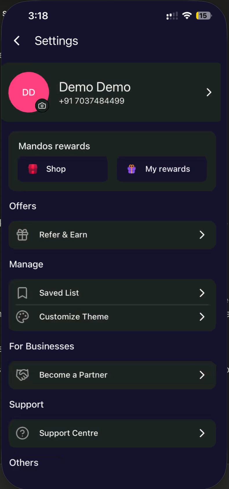
Settings holds Rewards, Refer & Earn, Saved List, Customize Theme, Become a Partner, Support. Half of these deserve to be first-class surfaces. The other half don't belong in consumer settings at all.
Customize Theme is the source of brand inconsistency across screens.
Become a Partner buried at the bottom of consumer settings.
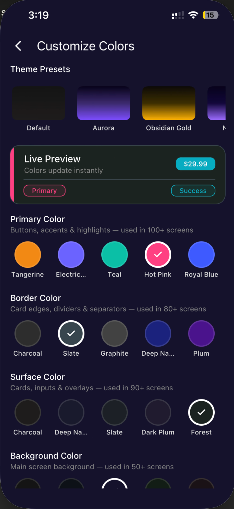
The Customize Theme screen exposes primary, border, surface, and background colour controls. The price label inside it appears to be a preview of how a paid component might look. The real issue is the feature existing for users to touch at all. The screenshots in this review use three different accents (orange, pink, purple) for the same screens because of this single feature.
Every user can repaint the brand. No recognition is possible.
This is the strategic direction I'd like to bring into our designer call. None of this is in the current app. It's the lens I think gives Mandos something durable to own.
The strongest version of Mandos isn't a better venue directory. It's a presence-and-discovery layer on top of nightlife. A way to see who's out, where the energy is, what your night could become. The point isn't to list bars. It's to make the night legible.
Six pieces carry the product forward. A defining user behaviour, a map-first architecture, a coin economy reframed as social currency, a music layer, a morning artifact, and a discovery feed for when users aren't ready to commit yet. Together they form one loop.
Browse a directory of bars and clubs
Coins as loyalty points, redeemed at a shop
A profile built by form-filling
Four taxonomic tabs and a map sub-page
Feels like a banking flow in dark mode
The night ends when you close the app
Find your night. Who's out, where, what's playing
Coins as social moves. Drink, song, tip, gift
A profile built by behaviour and music taste
One map. Presence in the corner. Whole product visible
iOS Liquid Glass, Dynamic Island, haptics throughout
The night ends with a receipt. Your Sunday morning artifact
Today, the app has no signal for when a user is actually out. That single missing data point is what makes everything else feel generic. No "tonight," no presence, no urgency.
One button. The user taps it when heading out. Their presence appears on the map for three hours, then quietly goes invisible. Mandos is "on" only when you are.
Live who's-out map. Friend-arrival nudges. Music-overlap discovery inside venues. A reason for the app to send a meaningful notification. Every other proposal builds on this.
The four taxonomic tabs treat nightlife the way Yelp treats restaurants. Nightlife isn't a list. It's a moment in space. A map represents that intuitively. Tabs do not.
The map fills the screen, edge to edge. Pins are sized by live activity. Friends appear when they're "out." Filter chips inline (Tonight · Near me · My vibe). No modal sheets. A coin pocket and presence state in the corner of every screen.
A first-glance signal of where the night is happening. A reason to open the app without a task in mind. The first Dynamic Island Live Activity in a nightlife app. Your current venue and song persisting in the corner of your phone.
Today, coins are a balance redeemed at an empty shop. Pure loyalty framing. Loyalty programs are commodity. Social currency isn't. No other nightlife app has this lane.
Coins become actions you do to other people. Buy a stranger a drink, send a song, tip the DJ, gift a friend, unlock priority entry. The currency stops being a number on a page and becomes a verb in the night.
An anonymous-social mechanic nobody else has shipped. The slow-reveal pattern (drink, song, emoji, meeting) becomes Mandos's signature. Coins go from cost centre to engagement driver.
Music taste is the deepest, fastest signal for who someone is and where they want to be. Mandos has no signal for it today. A real Spotify connect changes the personalisation layer entirely.
OAuth into Spotify. Top-100 import. Music-overlap matching surfaces "this person at the bar shares 80% of your taste." A small ambient tag at partner venues turns "what's playing now" into a savable card. The DJ becomes part of the app loop.
The deepest social opener nobody else offers. Music as the first message. Saved-at-Mandos songs land in Spotify automatically, making Mandos the bridge between the room and the streaming app. Quiet brand reach into Spotify itself.
Nights end. Most apps end with them. The right artifact at Sunday morning is the strongest organic-distribution mechanic available to this category. Stories, screenshots, shared moments. All of it sits unclaimed today.
Auto-generated Polaroid-style record of the night. Venues, friends, songs, coins spent, photos. Designed object, not a debrief screen. Templates per venue. Shareable to Instagram Stories in two taps.
Free brand walks into the user's followers every Sunday morning. The loop closes. Last night's receipt becomes next weekend's plan. Mandos becomes the only app where the night persists past last call.
The map answers "where is the night happening." But users also want to browse what nightlife actually looks like, the way they scroll Pinterest before a holiday. Today, the app's home is news articles. Nobody opens an app to read news.
A random-sized masonry grid, not a uniform one. The randomness is the energy. Live clips from venues, receipt artifacts from users, recap videos from creators. Three rails of content: venues post directly, users share receipts, creators we partner with publish nights.
A creator and influencer layer scene-makers can be followed inside. A real revenue model: venues and brands pay to amplify their cards in the grid, the way Pinterest sells promoted pins. The brand exists for users who aren't out yet, on quiet Tuesdays scrolling at home.
Each of these did one thing exceptionally well that Mandos can borrow conviction from. None are competitors. They're the right neighbours.
You appear when you're using it, not always. Mandos's "I'm out" is the nightlife version of the same logic.
"3 friends ran here today" beats any algorithm. Mandos's venue cards should carry the same network-anchored proof.
The masonry layout is the feature. Random sizing creates the energy that uniform grids can't. The model for Mandos's feed.
"Designed to be deleted" reframed the category. Mandos's anonymous-drink slow-reveal is the same posture for nightlife.
Invitation cards as beautiful artifacts, not data forms. Mandos's receipt and event detail should feel the same.
If the product becomes what's proposed in Part III, it earns a single line, and the line earns the product. Everything else (the map, the coin, the receipt, the feed) reinforces that one promise. That's the work I'd like us to take into the designer call.